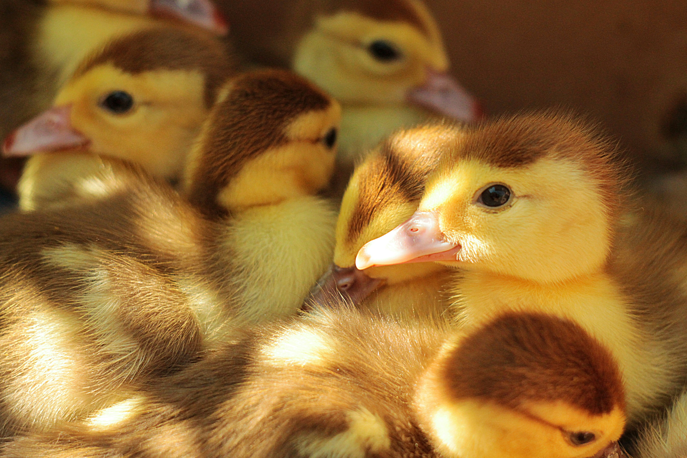

어떤 오리는 아기 오리의 목을 콱 물기까지 했다. 어미가 그를 감싸며 항의하자, 다른 오리는 아기 오리가 너무 크고 이상하니 호되게 맞아야 한다고 말했다. 나이 든 오리 역시 다른 새끼들은 예쁘지만 저 한 녀석만 제대로 나오지 못했다며 혀를 찼다.
어미는 아기 오리가 그다지 잘생기지는 않았다고 인정하면서도 그를 변호했다.
“하지만 아주 착하고 다른 아이들만큼 헤엄도 잘 쳐요. 아니, 조금 더 잘 친다고 말해야겠군요. 나이가 들면 외모가 좀 나아질 거예요.”
그러나 어미의 말에도 다른 동물들의 태도는 달라지지 않았다. 못생긴 아기 오리는 다른 오리들과 닭들에게 쪼이고 밀리고 놀림당했다. 몸집이 크다는 이유로 비웃음을 샀고, 어디에 서 있어야 할지조차 알 수 없었다. 형제자매들마저 그를 싫어했다.
“아, 저 고양이가 너를 확 잡아버리면 좋겠어. 이 못생긴 녀석아.”
어미 오리도 마침내 지친 목소리로 말했다.
“차라리 멀리 가버리면 좋겠구나.”
아기 오리는 모두가 자신을 미워하는 까닭이 못생긴 외모 때문이라고 생각했다. 더는 견딜 수 없었던 그는 울타리를 넘어 농장을 도망쳐 나왔다. 작은 새들이 놀라 날아오를 만큼 정신없이 달린 끝에, 아기 오리는 들오리들이 사는 커다란 늪지에 도착했다.